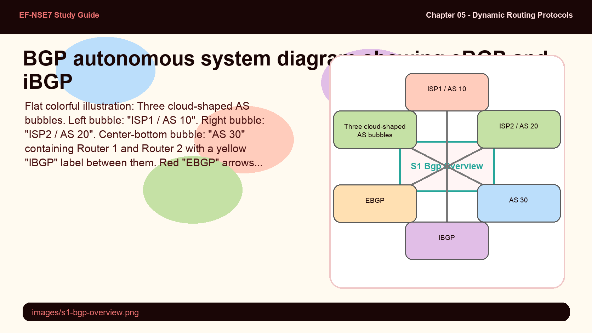
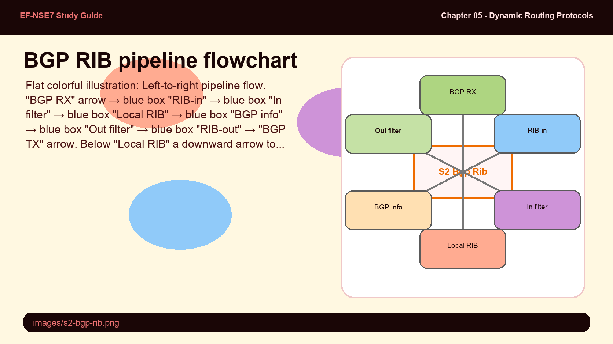
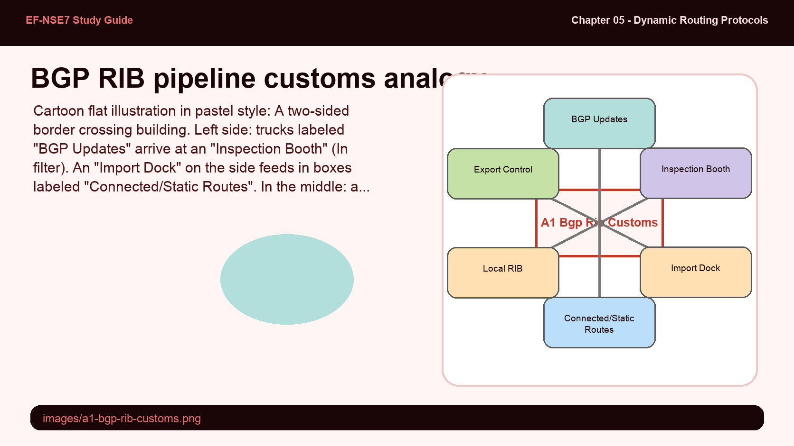
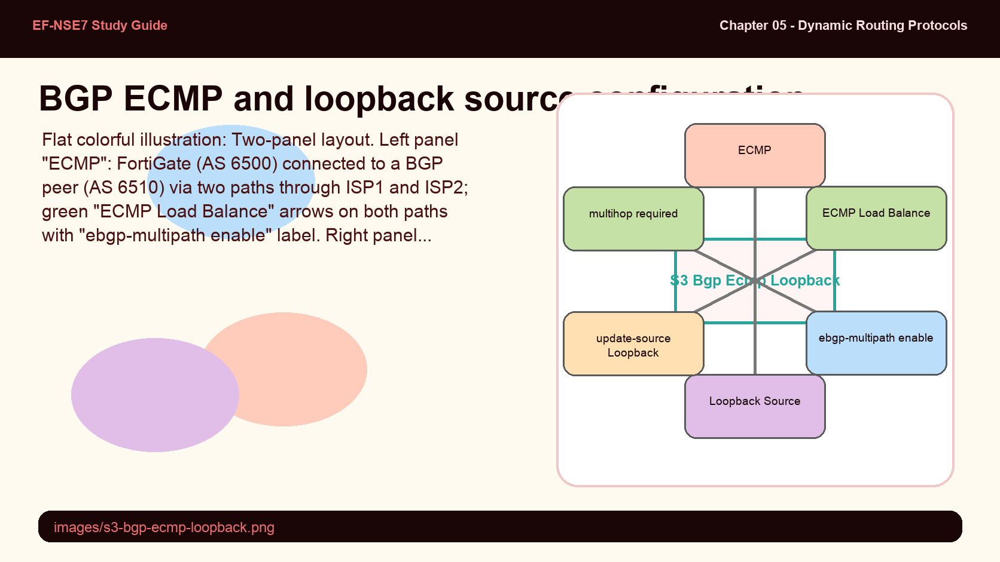
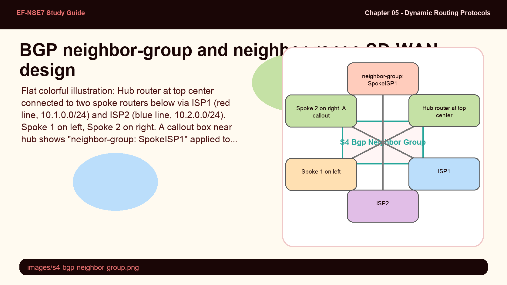
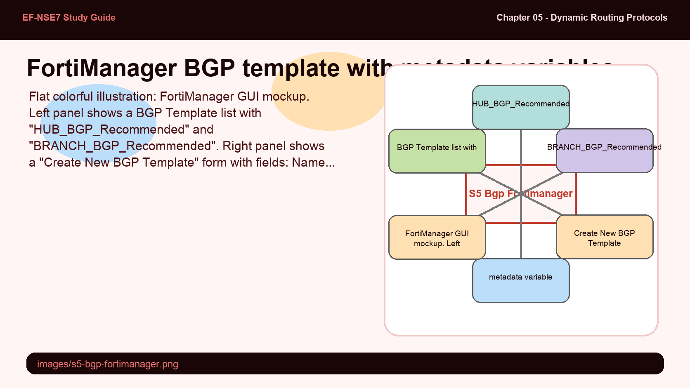

BGP uses autonomous systems (AS) as its fundamental unit — two routers in the same AS use iBGP, while routers in different ASes use eBGP. This distinction profoundly affects how BGP behaves: iBGP does not re-advertise routes learned from one iBGP peer to another, which forces every iBGP router to peer with every other iBGP router in the AS — a full mesh requirement that scales poorly.
- Why does iBGP not re-advertise routes between iBGP peers (the split-horizon rule)? What routing problem does this prevent?
- By default, FortiGate BGP does not advertise any prefixes. What is the architectural reason for this conservative default, and how does this differ from OSPF's behavior?
BGP Overview — eBGP, iBGP & AS Design

BGP uses Autonomous Systems as its unit. eBGP connects different ASes; iBGP connects routers within the same AS.
BGP (Border Gateway Protocol) is the routing protocol underlying the global internet. It exchanges routing and reachability information between autonomous systems (AS) — networks under a single administrative authority identified by an AS number. BGP is a path-vector protocol, not a link-state protocol, and makes decisions based on policy attributes rather than pure shortest-path calculations.
Two BGP session types exist: eBGP (External BGP) connects routers in different autonomous systems, and iBGP (Internal BGP) connects routers within the same AS. iBGP requires a full mesh of peering sessions because iBGP routers do not re-advertise routes learned from one iBGP peer to another — a loop-prevention rule called the iBGP split horizon.
FortiGate BGP is configured under config router bgp. The local AS number is set with set as, and a router ID (typically a loopback IP) is set with set router-id. Neighbor sessions are defined per peer under config neighbor.
config router bgp
set as 65100
set router-id 172.16.1.254
config neighbor
edit 100.64.1.254
set remote-as 200
next
end
endThe BGP RIB (Routing Information Base) pipeline defines exactly where filtering can occur. Routes enter via RIB-in, pass through an inbound filter to the local RIB, get merged with redistributed routes from the routing table, then exit through an outbound filter to RIB-out before being advertised. Understanding this pipeline tells you exactly which parameter to use for each filtering goal.
- Looking at the BGP RIB pipeline, what is the difference between filtering with distribute-list-in versus filtering with distribute-list-out? Which one protects your local routing table, and which controls what you advertise to neighbors?
- BGP route maps can be applied both inbound and outbound (route-map-in / route-map-out). What can a route map do that access lists and prefix lists cannot, specifically in the context of BGP?
Protocol Redistribution & BGP RIB Pipeline

The BGP RIB pipeline: routes enter RIB-in, pass inbound filters, merge with redistributed routes, then pass outbound filters before advertisement.
The BGP Routing Information Base (RIB) is a pipeline with distinct stages where filtering can be applied. Understanding this pipeline is essential for knowing which CLI parameter to use:
- RIB-in — raw BGP updates received from peers
- In filter — applies distribute-list-in, prefix-list-in, or route-map-in to incoming routes
- Local RIB — the BGP routing database after inbound filtering
- Redistribute — routes from the routing table (connected, static, OSPF, RIP, IS-IS) injected into BGP
- Out filter — applies distribute-list-out, prefix-list-out, or route-map-out to outgoing advertisements
- RIB-out — what actually gets advertised to BGP peers
| Filter Method | Inbound Parameter | Outbound Parameter | Can Set Attributes? |
|---|---|---|---|
| Access Lists | distribute-list-in | distribute-list-out | No |
| Prefix Lists | prefix-list-in | prefix-list-out | No |
| Route Maps | route-map-in | route-map-out | Yes — LOCAL_PREF, MED, AS_PATH, next-hop |
The BGP RIB pipeline is like a customs system at a border crossing — with inspection on both entry and exit, and a redistribution "import dock" in the middle.
- RIB-in — the holding area where all arriving shipments (BGP updates) wait for inspection
- In filter — customs inspection: decides what gets into the country (local RIB)
- Redistribute — the domestic import dock: local goods (connected/static routes) enter the system here
- Out filter — export control: decides what the country is allowed to ship out to neighbors
- Route map — a customs officer who can both reject goods AND change their declared value (attributes)

BGP ECMP and loopback-sourced sessions both address resilience but at different layers. ECMP allows load-balancing across multiple equal-cost paths to the same BGP next-hop. Loopback-sourced sessions keep the BGP peering alive even when one physical link fails — because loopback interfaces never go down unless the router itself fails.
- When you configure a BGP session using a loopback interface as the source, why is "ebgp-enforce-multihop enable" mandatory, even if the loopback and the neighbor are logically close?
- What is the difference between ebgp-multipath and ibgp-multipath — why would you need ibgp-multipath in an SD-WAN design?
BGP ECMP & Loopback Interface Source

Left: ECMP across two ISP paths requires ebgp-multipath enable. Right: Loopback as BGP source requires multihop since the loopback isn't the direct next hop.
BGP ECMP allows FortiGate to load-balance across multiple equal-cost paths to the same BGP next-hop. When there are multiple ECMP routes to a BGP peer's next hop, enabling ebgp-multipath allows FortiGate to consider all those paths. Similarly, ibgp-multipath enables ECMP for iBGP routes, critical in SD-WAN designs where multiple overlays share the same AS.
config router bgp
set ebgp-multipath enable
set ibgp-multipath enable
endUsing a loopback interface as the BGP session source provides resilience — the loopback stays up as long as the router is alive, even if physical interfaces flap. The BGP session can survive link failures as long as any path to the loopback exists. Two key requirements for loopback-sourced eBGP sessions:
- update-source must be set to the loopback interface in the neighbor configuration
- ebgp-enforce-multihop enable is required because the loopback is not the immediate next hop (eBGP defaults to TTL=1)
Additionally, a firewall policy must allow TCP port 179 (BGP) traffic between the loopback and the physical interface, since the BGP session traffic may traverse a physical interface that is separate from the loopback.
config router bgp
set as 65100
set router-id 172.16.1.254
config neighbor
edit 100.64.1.254
set remote-as 65101
set update-source Loopback_Interface
set ebgp-enforce-multihop enable
next
end
endIn a large SD-WAN deployment, a hub may have hundreds of dial-up spoke BGP peers. Configuring each peer individually is impractical. The neighbor-group and neighbor-range commands solve this by applying a common template to all peers that match an IP range — similar to how OSPF network statements apply to interfaces matching a subnet.
- How does "neighbor-range" work with "neighbor-group" — what is the relationship between these two commands and why does the order matter?
- In the SD-WAN hub configuration shown in the PDF, ibgp-multipath is enabled along with the neighbor group. Why is ibgp-multipath specifically needed here rather than ebgp-multipath?
BGP Neighbor Groups — SD-WAN Scale Deployment

In SD-WAN hub-and-spoke BGP, neighbor-groups apply shared settings to all spokes in a subnet range — enabling zero-touch peering as spokes connect.
The neighbor-group command allows common BGP settings to be applied to multiple peers simultaneously. In a standard SD-WAN design, spokes are dial-up clients acting as iBGP speakers. By defining a neighbor group for each overlay (one per ISP underlay), the hub can apply consistent BGP parameters to all spokes connecting through that overlay.
The neighbor-range command defines which IP prefix characterizes the group. Peers whose IP falls within the specified range are automatically assigned to the corresponding neighbor group and inherit all its settings.
config router bgp
set as 65100
set router-id 172.16.1.254
set ibgp-multipath enable
config neighbor-group
edit SpokeISP1
set interface ISP1
set remote-as 65100
next
end
config neighbor-range
edit 1
set prefix 10.1.0.0 255.255.255.0
set neighbor-group SpokeISP1
next
end
endBecause this is an iBGP deployment (all spokes share AS 65100 with the hub), ibgp-multipath must be enabled to allow ECMP across routes received from multiple spokes. Peers with IP addresses in the 10.1.0.0/24 range are automatically assigned to the SpokeISP1 group, inheriting the interface and remote-AS settings.
FortiManager BGP templates centralize BGP configuration management, enabling one template to be pushed to many devices. Metadata variables make templates dynamic — instead of hard-coding an AS number, a metadata variable like $(AS_Spokes) resolves to a per-device value during installation. The recommended BGP templates include best-practice settings already preconfigured.
- What is the purpose of FortiManager metadata variables in BGP templates, and what problem do they solve that a static template cannot?
- The recommended BRANCH_BGP_Recommended template pre-configures ibgp-multipath, graceful-restart, and capability-graceful-restart. What does graceful-restart do during an HA failover, and why is it particularly important for BGP?
BGP Configuration via FortiManager

FortiManager BGP templates use metadata variables to apply device-specific values (AS number, router ID) during installation on each spoke.
FortiManager BGP templates allow centralized creation and deployment of BGP configuration to multiple FortiGate devices. Templates are found under Device Manager → Provisioning Templates → BGP Template. Two recommended templates are built-in: HUB_BGP_Recommended and BRANCH_BGP_Recommended.
Metadata Variables enable templates to be dynamic — device-specific values like AS number or the last octet of the router ID can be parameterized as $(variable_name). FortiManager substitutes the correct value per device during installation, allowing one template to serve all spokes.
The deployment workflow is: (1) Create or import the BGP template, (2) Assign it to a device or device group, (3) Run the Install Wizard to push settings. Metadata variables are resolved automatically during the install. Templates can also be imported directly from an existing device or VDOM configuration.
The BRANCH_BGP_Recommended template pre-configures key best-practice settings:
ibgp-multipath enable— ECMP across iBGP pathsgraceful-restart enable— prevent BGP session disruption during HA failovercapability-graceful-restart enable— advertise graceful-restart capability to neighboradvertisement-interval 1— faster BGP update convergencelink-down-failover enable— immediate session teardown on link failuresoft-reconfiguration enable— store received routes for policy recalculation without resetting sessions
Key BGP diagnostic commands:
| Command | Shows |
|---|---|
get router info bgp summary | BGP status, all neighbors, AS numbers, packet counters, uptime |
get router info bgp neighbors | Neighbor detail: peer IP, router ID, remote AS, BGP state, capabilities |
get router info bgp network | BGP database — all known prefixes |
get router info routing-table bgp | BGP routes installed in the routing table |